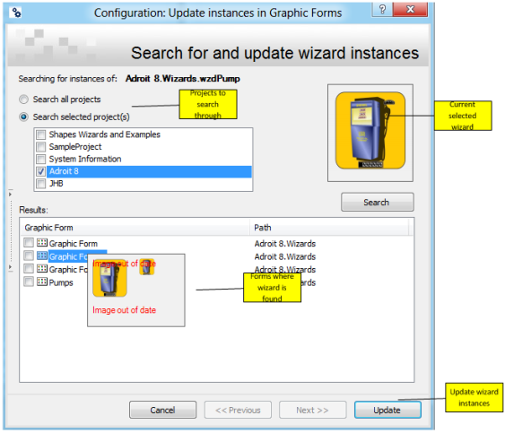

Since wizards are inserted into a graphic form, by instance and NOT by reference, typically any subsequent change made to the wizard is NOT automatically reflected in the instances of the wizard that you have ALREADY added to a graphic form.
But you are able to update specific instances of a wizard to the current wizard configuration. In this case, you can either choose to search all or specific projects that contain graphic forms that use a specific wizard.
Typically in the Enterprise Manager window:
 and select Update Instances.
and select Update Instances. Note: If you have any other graphic forms that are currently open, you will then be asked to save and close these graphic forms first, before beginning the wizard instance updating process.
In the Update instances in Graphic Forms dialog:
Tip: This dialog provides a preview of the wizard that is being updated, in the top right corner, so that you can ensure that you are updating the correct wizard.

Hovering over each listed graphic form displays a preview of each graphic form.
Note: If a graphic form has been modified after it was last opened in the SmartUI Designer then its preview image will display the words "Image out of date".
Only check the checkboxes of the graphic forms whose wizard instance/s you want updated to the latest version of this wizard
Note: Check the Reset instances to current wizard size checkbox, when the modified wizard has increased in size to include additional items, to ensure that each instance of this wizard will also be resized to this new size so that this additional content is not truncated.
This displays a progress bar, indicating the number of the current graphic form whose wizard instance/s are being updated.
Only if a wizard instance was resized after it was added to the graphic forms that you are updating, then this graphic forms will be opened and closed during the updating process to ensure all the elements of each updated wizard instance are correctly sized.
IMPORTANT NOTE: Since wizards are ONLY inserted into a graphic form, by instance NOT by reference, any subsequent change to the wizard will NOT be reflected in the instances of the wizard that you have ALREADY added to a graphic form, unless you update them again.
 Example:
Example: